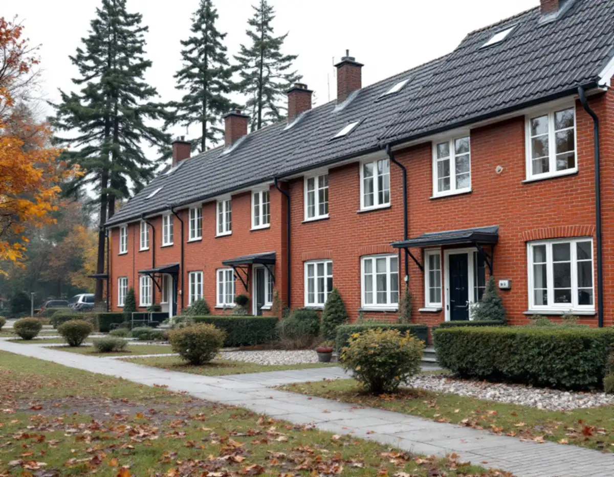
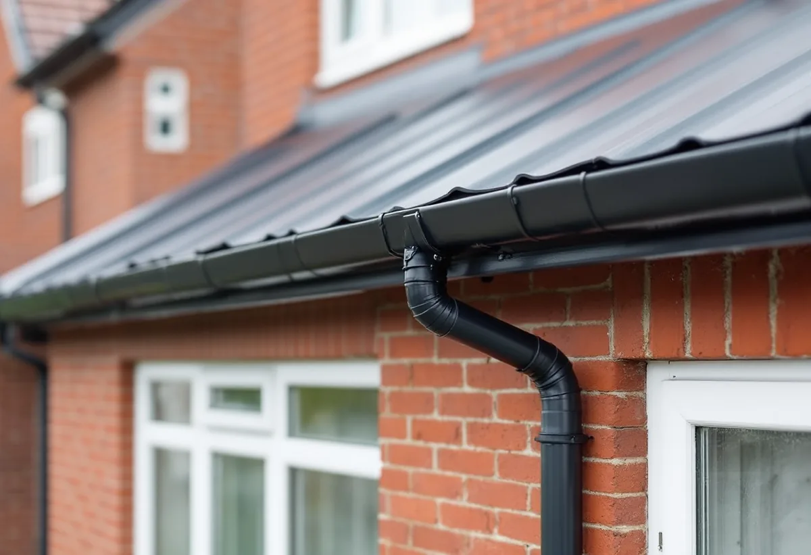

Platsbesök
Vi dokumenterar dagens plåtdetaljer med mått och bilder: takfot, vindskivor, rännor och beslag.
Vällingby och Råcksta är riksintresse för kulturmiljövården, och det gäller även radhusen och villorna i stadsdelens utkanter. För den som ska byta takplåt, rännor eller beslag är den första frågan därför om arbetet räknas som underhåll eller som en ändring av husets utseende. Geal Entreprenad AB har egna plåtslagare som byter plåttak, rännor och beslag på villor och radhus i Vällingby, med gratis platsbesök och skriftligt kostnadsförslag.

Enligt stadens vägledning Varsam utveckling av småhus- och villaområden var Vällingby den första tunnelbanestaden och invigdes 1954. Råcksta och Hässelby gård planerades samtidigt, och Vällingby blev den stadsdel där ABC-stadens tankar genomfördes mest konsekvent. Närmast centrum står de högre husen, och längst ut ligger grupper av rad- och kedjehus. Vägledningen nämner radhusområdena Atlantis i nordost och Omega i nordväst som kulturhistoriskt synnerligen värdefulla, och Vällingby–Råcksta är utpekat som riksintresse för kulturmiljövården.
Stadsmuseets Stockholms Spår om Råcksta berättar att den första delen var klar för inflyttning 1952 och att radhusen vid Långseleringen och Ramselegatan, ritade av Adrian Langendal och färdiga 1953, har uppmärksammats för sin livfulla färgsättning och sina omväxlande detaljer. Det är just den sortens detaljer som gör att plåten på taket inte bara är en teknisk fråga i Vällingby: takfotens profil, vindskivornas bredd och rännornas kulör är en del av helheten.

Plan- och bygglagen definierar en fasadändring som en ändring som gör att byggnaden byter kulör, fasadbeklädnad eller taktäckningsmaterial, eller att dess yttre karaktärsdrag påverkas på annat sätt. Underhåll är enligt samma lag åtgärder som görs för att bibehålla eller återställa byggnadens konstruktion, funktion, användningssätt, utseende eller kulturhistoriska värde. En ny takplåt i samma material, profil och kulör som den gamla ligger alltså närmare underhåll än ändring.
För en- och tvåbostadshus krävs normalt inget bygglov för fasadändring, skriver Boverket. Stockholms stad påpekar att utökad lovplikt gäller i ett riksintresse för kulturmiljövården, som på stadsmuseets karta visas med blå ring, och att du då behöver söka bygglov för åtgärder som annars är bygglovsbefriade. Ska plåten bytas mot ett annat material eller få en annan kulör i Vällingby är det därför en fråga för stadsbyggnadskontoret.
Staden skriver också att vissa detaljplaner har bestämmelser om utökad lovplikt som kan omfatta underhållsåtgärder, och att alla ändringar ska göras varsamt oavsett om de kräver lov eller inte. Inom ett riksintresse får man inte göra åtgärder som påtagligt kan skada riksintressets värden. Detaljplanen för fastigheten finns i stadens e-tjänst Bygg- och plantjänsten, och den läser vi tillsammans med dig innan vi föreslår material.
Stockholms stad hänvisar till Stadsmuseets klassificeringskarta som en första indikation, men skriver att du kan behöva kontakta museet för en bedömning. Museet vill då ha adress, fastighetsbeteckning och stadsdel, byggnadsår, eventuella ombyggnader och årtal för dem, samt fotografier av både huset i översikt och fasaderna. Enligt staden brukar museet svara inom tre veckor efter att alla uppgifter har kommit in, och längre under helger och semestrar.
För större ingrepp kan det enligt staden behövas en antikvarisk förundersökning och en konsekvensbeskrivning, och ibland att en sakkunnig inom kulturvärden kopplas in i arbetet. Det gäller främst större ingrepp, till exempel ett nytt tak med annat material på ett hus i Atlantis eller Omega. Vi tar fram bilder och mått på de befintliga plåtdetaljerna, så att du har underlaget till museet klart.
Plåt är ett tunt material som kyls ned snabbt. Boverket beskriver hur ytor som vetter mot natthimlen kan kylas ned kraftigt vid kall och klar väderlek, så att luften i en ventilerad vind eller en luftspalt kondenserar på yttertakets insida. Följden kan bli uppfuktning av underlaget, ansamling av vatten som rinner vidare in i konstruktionen, mikrobiell påväxt och rostangrepp på metaller.
Hur stor risken är beror enligt Boverket bland annat på luftomsättningen i det ventilerade utrymmet, takets lutning och de yttre skiktens isoleringsförmåga. När vi byter plåt på ett radhus ser vi därför också över underlaget, luftningen vid takfot och nock och om vinden har spår av fukt. Mer om fukt på vinden finns under fuktskada och mögel på vinden, och om plåtarbeten i allmänhet på sidan plåtslagare.
Vi dokumenterar dagens plåtdetaljer med mått och bilder: takfot, vindskivor, rännor och beslag.
Detaljplanen och Stadsmuseets karta avgör om materialvalet kräver lov.
Plåt, underlag, rännor och beslag redovisas som egna poster i ett skriftligt förslag.
Plåten bockas efter de gamla profilerna så att detaljerna får samma mått som förut.
Vi går igenom luftningen vid takfot och nock innan ställningen tas ner.
Skatteverket godkänner rotavdrag för att reparera, rengöra eller byta ut plåttak, hängrännor och stuprör på ett småhus. Avdraget är 30 procent av arbetskostnaden, högst 50 000 kronor per person och år och högst 75 000 kronor sammanlagt med rutavdrag.
Material och resor ger inget avdrag, och bor du i bostadsrätt ger plåtarbeten på husets tak inte rotavdrag. Vi drar avdraget direkt på fakturan.
Om plåten byts i samma utförande eller mot något nytt, hur många specialbockade detaljer huset har, underlagets skick, om flera hus i en grupp görs samtidigt och vilken ställning som behövs. Efter ett gratis platsbesök får du ett skriftligt kostnadsförslag.
Plåttak, hängrännor och beslag.
Plåtslagare i Stockholm →Takbyte, takbesiktning och plåtarbeten.
Takläggare i Vällingby →Bygga till i riksintresset.
Byggföretag i Vällingby →Puts från 1950-talet och kulör i riksintresset.
Fasadmålning i Vällingby →Gamla mattor, lim och asbest.
Golvläggare i Vällingby →Radhus och lägenheter i ABC-staden.
Målare i Vällingby →Entréer, dörrar och räcken på radhusen.
Snickare i Vällingby →